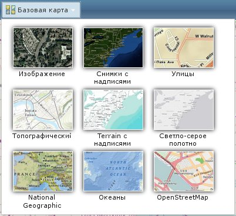

ГИС – географическая информационная система, предназначенная для сбора, хранения, анализа и графической визуализации пространственных данных и связанной с ними информации.
ГИС-сервис - ресурс ГИС, такой как карта, глобус, локатор или подключение к базе геоданных, расположенный на сервере и доступный для клиентских приложений.
Геоинформационный программа минипортал обеспечивает графическое отображение электронной карты и пространственных данных и предоставляет пользователю набор инструментов для работы с ними. Для запуска минипортала нужно воспользоваться любым их перечисленных браузеров :
Веб-интерфейс программы Минипортал служит инструментом визуализации информации получаемой посредством ГИС-сервисов. Наиболее часто ГИС-сервисы предоставляют информацию об социально-значимых объектов в сочетании с топографической информацией и космическими снимками. Состав разделов и инструментов позволяет решать различные задачи для простых пользователей, так и задачи, являющиеся значимыми для разных органов управления в сфере пожарной безопасности, жилищно-коммунальных услуг, ликвидации чрезвычайных ситуаций, транспортного контроля и безопасности дорожного движения и т.п. ГИС-сервисы облегчают совместное использование ресурсов клиентами. Вы можете быть уверены, что каждый клиент получает одинаковое представление ресурса, при этом вы экономите ресурсы, так как они хранятся на сервере и клиентам не нужно устанавливать программное обеспечение ГИС. Вместо этого на сервере хранятся ресурсы, размещается сервис, и сервер выполняет ГИС-функции, отправляя клиенту результат в определенном формате, например, в виде изображений или текста.
Для удобства работы и ориентации на странице портала, и интерфейс поделен на боковую панель и инструменты, расположенные на верхней панели.
Рис. 1. Структура портала
Боковая панель предназначена для отображения Содержания карты и Добавления слоев на карту.
Инструменты для работы с картой и информацией располагаются в верхней части окна минипортала.
Для работы с инструментом, нажмите на кнопку необходимого инструмента. Кнопка поменяет цвет на светло-синий, что говорит об активности инструмента. После этого обычно открывается окно для работы с инструментом.
Позволяет просматривать информацию о содержимом карты и работать с ним. Обычно карта состоит из базовой карты и одного и более слоёв. В данной панели слои и их подслои организованы в древовидную структуру, которая позволяет управлять их видимостью с помощью флажков-переключателей.
Свойствами слоя можно управлять с помощью контекстного меня слоя доступного при нажатии пиктограммы конфигурирования справа от слоя:
Рис. 1.5 Контекстное меню слоя
Позволяет добавлять слои-ГИС-сервисы любым из указанных на рисунке способов.
Рис. 2. Инструмент "Добавить".
Этот пункт нужен для добавления на карту произвольный слой при помощи URL указывающий на этот слой.
При выборе этого пункта, вы увидите диалоговое окно, в котором нужно указать тип источника данных (на данный момент поддерживается только один — ArcGIS Server Web Service) и, самое главное, URL указывающий на слой данных.
На данный момент вы можете использовать URL только одного вида: для MapService.
Типичный URL для MapService выглядит так: http://services.arcgisonline.com/ArcGIS/rest/services/World_Topo_Map/MapServer
или так: http://sampleserver3.arcgisonline.com/ArcGIS/rest/services/Hurricanes/NOAA_Tracks_1851_2007/MapServer
После ввода URL щелкните кнопку «Добавить слой» или нажмите кнопку «Enter» на клавиатуре. Программа обратится по указанному URL к ГИС-сервису и отобразит его на карте и и легенде.
Рис. 2.1. Добавить слой из Интернета.
Этот пункт нужен для добавления на карту слоя при помощи так называемой библиотеки слоев.
При выборе этого пункта, вы увидите, что на боковой панели появился список слоев, зарегистрированных в библиотеке в виде изображений с подписями. Для того чтобы добавить любой из этих слоев к карте нужно щелкнув на изображении мышкой.
Для удобства в верхней части боковой панели находится список выбора разделов библиотеки. С помощью этого списка вы можете фильтровать набор показываемых в библиотеке слоев.
Рис. 2.2. Добавить слой из библиотеки слоев.
При выборе этого пункта меню, в боковой панели карты открывается список слоев, найденных на указанном сервере ArcGIS. Если вы еще не пользовались этим инструментом, список будет пуст. Чтобы заполнить его, необходимо указать URL сервера ArcGIS (только ArcGIS), например так:
"maps.rosreestr.ru" без кавычек.
После ввода URL, нажмите на клавиатуре кнопку Enter или щелкните мышкой кнопку в форме ввода. Программа начнет опрашивать указанный сервер, собирая сведения о всех картографических слоях на нем. Если слоев много и сервер медленный, ждать окончания построения списка придется долго.
Рис. 2.3. Добавить слой с ГИС сервера.
После построения списка вы увидите список с двумя рядами кнопок. В правой колонке находятся кнопки добавления выбранного слоя на карту, в левой колонке находятся кнопки, показывающие «карточку» слоя. При щелчке по такой кнопкке вы увидите всплывающее окошко с краткой информацией о слое.
Рис. 2.4. Краткая информация о слое.
Существует ограничение для метода "Использовать как подложку". Слой, который вы хотите сделать подложкой Вашей карты должен иметь Spatial Reference = 102100 (3857).
Так ли это Вы всегда можете узнать воспользовавшись инструментом "свойства службы".
Предназначен для работы с Галереей базовых карт, которая содержит разнообразные варианты топографии, снимков и улиц. Сама по себе Базовая карта обеспечивает фон географического контекста для содержания, которое вам необходимо отобразить на карте. При наличие сообщения "Map data not yet avalible" можно сделать печальный вывод, что выбранная Базовая карта не подходит для выбранного Вами места и(или) масштаба.

Рис. 3. Инструмент "Базовая карта".
Предназначена для подготовки ссылки на текущее состояние карты, включающие в себя порядок используемых слоев и текущий масштаб. Полученная ссылка предоставляет возможность делиться ссылками на карты с другими пользователями.
По нажатию на кнопку "Ссылка" происходит сохранение текущего состояния карты. Параметры карты, такие как координаты кадра (extent), перечень слоев и пр. записываются в файл, который передается на сервер. Файлу присваивается идентификатор вида «5E1DA84E03C077038DBF80CC56AC7364C2E96280», используя который можно впоследствии обращаться к сохраненным данным. Для этого достаточно скопировать ссылку из окна сообщения после успешного сохранения карты.
Эта ссылка, при переходе по ней в браузере, приведет к загрузке сохраненной карты.
Рис. 9. Инструмент "Ссылка".
Предназначена для подготовки текущего содержимого карты для печати. Для этой цели формируется изображение или PDF, которые открываются в новом окне браузера. В связи с этим при первой попытке печати может выводится сообщение о разрешении всплывающих окон для сервера cgis.allgis.org. После разрешения открывает новое окно. Выпадающее меню, изображенное на рисунке позволяет управлять предустановленными форматами и ориентацией изображения или PDF.
Рис. 4. Инструмент "Печать".
Инструмент позволяет проводить измерения расстояния между объектами, площади указанной области, расстояние между точками для произвольных линий и для определения координат. Для того чтобы начать работу нужно нажать на пиктограмму измерения. Она должна быть выделена-активна. После этого можно изменить единицы измерения, которые доступны в том же окне правее пиктограммы. Результаты измерения будут отображены в соответствующем месте.
Рис. 5. Инструмент "Измерить".
Поиск объектов осуществляется по данным ГИС-сервиса Росреестра (Геокодинг), и если этот сервис загружен запросами, то подготовка результатов Вашего поиска может занимать некоторое время.
С помощью строки поиска можно найти точку на карте по адресу. Для реализации функции в строку поиска введите адрес (до уровня населенного пункта, например, например "Орел" без кавычек).
В Панели результатов поиска будет отображен список всех адресов, соответствующих запросу.
Кроме этого можно осуществлять поиск по координатам. При вводе в строку поиска "36.090, 52.969" без кавычек, Вы найдете город Орел и Центр карты переместится в указанную точку.
Рис. 6. Инструмент "Найти адрес или место".